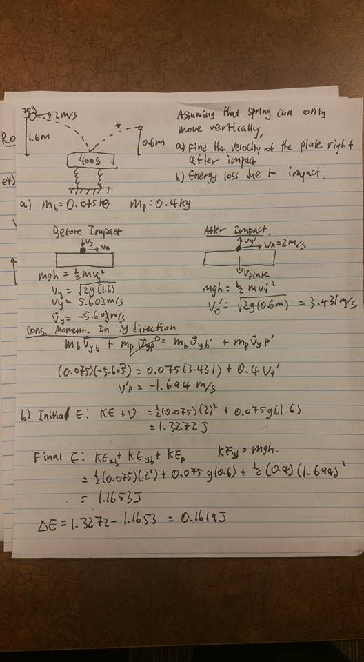

What is a WEEF TA?

WEEF TA is a special type of TA that is employed by the First Year Engineering Department in University of Waterloo. Unlike "normal" teaching assistants who are typically graduate students, WEEF TAs are special TAs that are consisted of upper year engineering students specifically for first year engineering students. This takes advantage of the co-op program of Waterloo and hire upper year students who went through the various courses that the frst years will experience. The benefit of hiring undergraduate students as a TA is that we are able to relate to first years as we went through the similar struggles. Additionally, students are less intimidated by us as we are younger and available for more casual office hours. This allowed for me to help students not only with academics, but with personal struggles like adjusting to university and finding coop placements.
My Responsibilities
There are various WEEF TAs for different courses, but I was the General WEEF TA, which supported first year linear algebra (Math115), first year calculus (Math116), and first year physics (Phys115).
I also took the liberty of supporting other related courses, for example CIVE115 which is different linear algebra for Civil/Geo/Enviro Engineering students, CIVE104 which is mechanics for the same prior group of students, and ECE105 which is the "harder" physics that first year ECE and Software Engineering students take.
For Math115 which is a conceptually heavy course, I have developed a summary note explaining concepts in my own words using LaTeX for the students to use as a easy summary guide, which can be found here.